Can a computer hear a heart murmur, using only DSP?
This site walks you through our project from the first look at the data to the final evaluated detector. Every step shows what we did, why we did it, and the numbers that backed each decision.
The answer in four numbers murmur detector on the 100 unseen test recordings
How to use this site
What we were asked to do
Design and evaluate a complete DSP pipeline that analyses real heart-sound recordings (phonocardiograms) and detects or characterises heart murmurs. No machine-learning classifier was required. The focus was on DSP design, experiments and interpretation.
Every technical choice had to be backed by a measured number. "This filter is better" was not allowed unless a measurement showed it. So each step on this site ends with the evidence and the decision it led to.
Six phases click one to jump to it
Timeline
Choosing the recordings we worked on
CirCor has 942 children and 3,163 recordings. We did not use all of them. We built three sets with fixed random seeds so every result can be reproduced, and kept one set completely hidden until the very end.
Our three sets click a card
Rules we applied to the data
p1_annotation_check tested sampling rate, label values and label order in every file. It found one labelling error (84877_MV).What a heartbeat looks like as a signal
Each heartbeat makes two short sounds, S1 and S2. Between them are two quieter gaps: systole and diastole. A murmur is extra sound, usually inside systole. Explore real recordings from our development set below and listen to them.
Measured segment durations Table I, mean ± SD, development set
Heart rate: 102 bpm (normal) vs 111 bpm (murmur). These are children, so hearts beat fast and every segment is short, often only 100–150 ms.
- Stethoscope friction and movement
- Crying and talking (these are children)
- Baseline wander (very low frequencies)
- Breath sounds
Murmur segments have more energy, a wider spectrum and higher entropy than normal ones. Phase 3 tests this with numbers. (Spoiler: energy yes, entropy only partly.)
See our MATLAB figure
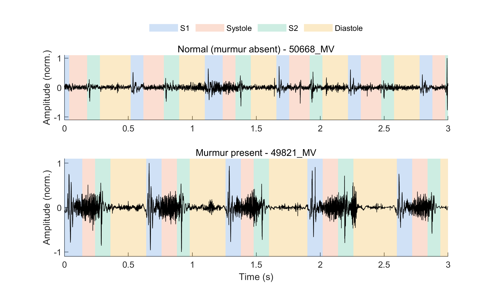
p1_plot_annotationsThe pipeline we proposed (and finally used)
Seven blocks turn a raw recording into a "murmur / no murmur" answer. In Phase 1 every block came with an open question. The rest of the project answered those questions with experiments. Click a block to see its final settings and where they came from.
Why we picked this: We cut heartbeats with the expert annotations because they are more accurate than our own S1/S2 detector (F1 0.72), so every feature is measured on the right phase.
Where is the heart-sound energy in frequency?
Before designing a filter you need to know what to keep. We computed the Welch power spectrum separately for S1+S2, systole and diastole. Try it on a single recording below.
Welch PSD, Hann window, 256 samples, 50% overlap, computed in your browser over the complete annotated cycles of this recording.
Why we picked this: We started from a 25–600 Hz passband because heart sounds sit at 20–150 Hz, murmurs reach about 600 Hz and drift stays below 16 Hz. The 60 Hz mains peak was only 2.7 dB, so no notch filter was needed.
See our MATLAB figure
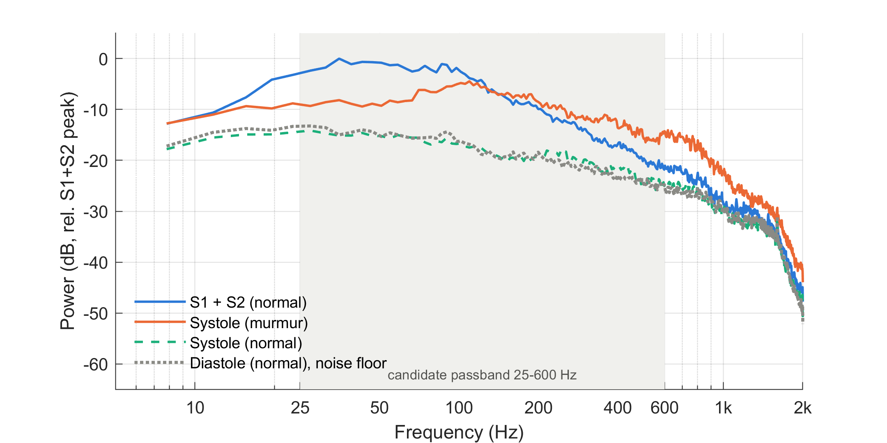
p2_spectrumFIR or IIR? Both cleaned the signal. Only one kept the timing.
We designed a FIR bandpass (Hamming window, order 400) and an IIR Butterworth bandpass (8th order), both 25–500 Hz, and measured them on the same recordings.
Why we picked this: We picked FIR over IIR because both removed the same noise, but the FIR delay is constant (50 ms, removed exactly by shifting 200 samples). The IIR delays 25 Hz by 26 ms but 200 Hz by only 1 ms, which distorts the timing of S1 and S2.
| Measure | Raw | FIR, order 400 | IIR, order 8 |
|---|---|---|---|
| Energy below 20 Hz | 1.5% | 0.1% | 0.1% |
| S1+S2 / diastole ratio | baseline | +1 dB | +1 dB |
| Murmur–normal systolic gap | 4.6 dB | 5.7 dB | 5.7 dB |
| Energy above 500 Hz | – | ≈ 0 (> 50 dB stopband) | 3.3% |
| Group delay | – | constant (200 samples, removed) | 26 ms at 25 Hz, 1 ms at 200 Hz |
FIR, Hamming, order 400, 25–500 Hz. Same noise reduction as IIR, a cleaner stopband, and a constant group delay that we cancel exactly by shifting 200 samples. The IIR shifts low and high frequencies by different amounts, which would move S1/S2 timing.
Filter lab design your own FIR and hear the difference
See our MATLAB figure
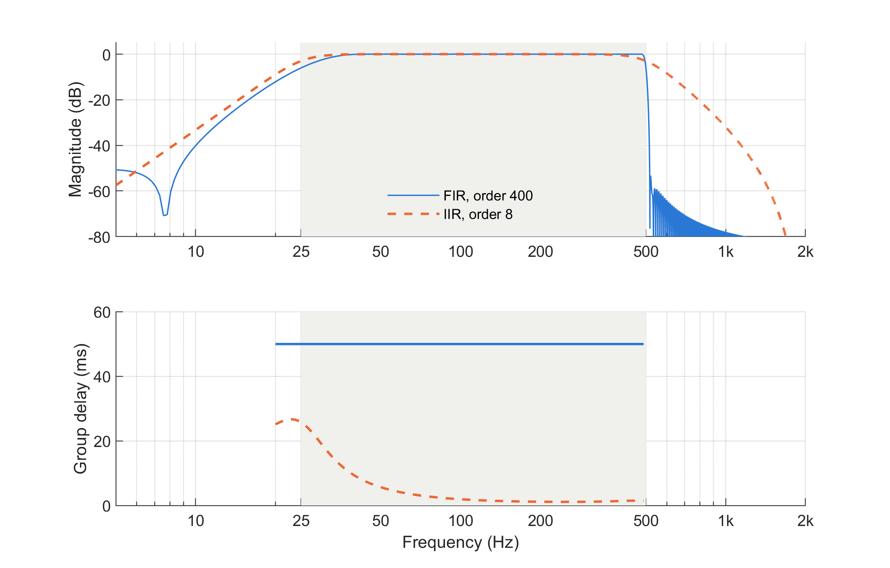
p2_fir_vs_iirWhy exactly 25 Hz, 500 Hz and order 400?
We swept 4 lower cutoffs × 4 upper cutoffs and measured two things on the development set: how much the heart sounds stand out from diastole in normal recordings, and how much louder murmur systoles are than normal systoles. Hover the cells. The red box is our choice.
Higher = S1/S2 stand out more. Raising the lower cutoff to 40 Hz loses S1 energy.
Higher = murmurs stand out more. 40 Hz wins here, but at the cost on the left.
Why we picked this: We picked 25–500 Hz because 40 Hz gave a bigger murmur gap but cut S1 (0.97 → 0.68 dB), and a 500 Hz top kept more S1+S2 gain than 600 Hz (0.97 vs 0.78 dB). Order 400 is where the FIR gain stops improving.
Filter order
Passband 25–500 Hz, FIR order 400.
See our MATLAB figure
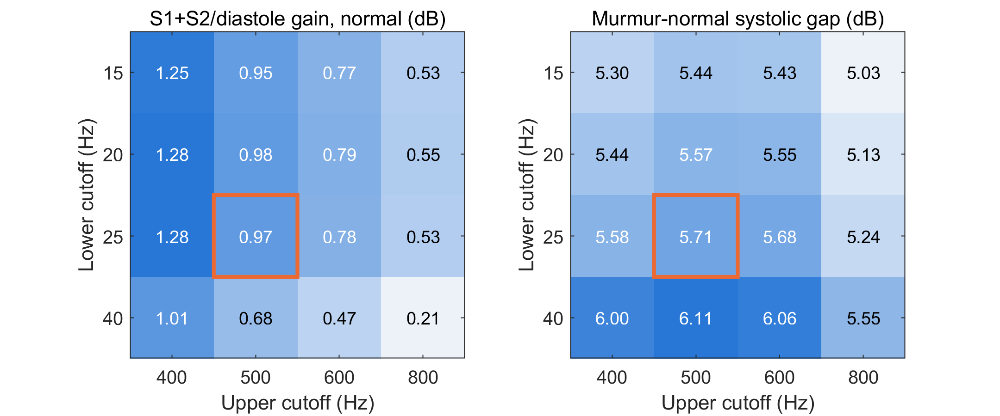
p2_cutoff_order_sweepCan we find S1 and S2 without the annotations?
Our detector computes an envelope, smooths it, picks peaks at least 150 ms apart, then labels each peak by timing: systole is shorter than diastole, so a peak followed by a short gap is S1. A detection is correct if it lands within ±60 ms of an annotated sound and has the right label.
All 24 settings we tested F1 on the development set · hover for details · click to try
Why we picked this: We picked Hilbert, 50 ms, threshold 0.2 because it had the best F1 of the 24 settings (72.4%). 20 ms smoothing gave false peaks and 100 ms merged S1 and S2. We used F1 because heart-sound detection has no true negatives.
Hilbert envelope, 50 ms smoothing, threshold 0.2: sensitivity 69.1%, PPV 76.1%, F1 72.4%, timing error 19.6 ± 11.7 ms (detections land about 17 ms early). Filtering helps: sensitivity rises from 66.6% on raw signals to 69.1% with our FIR. On the test set the same detector reached F1 75.2%.
See our MATLAB figure
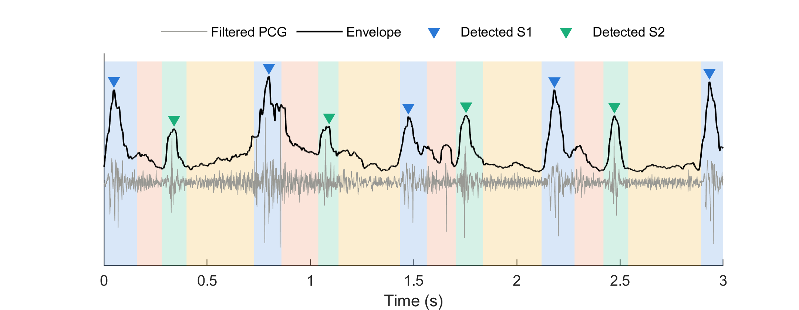
p2_s1s2_detectionComparing systole to its own diastole was the key idea
Absolute loudness changes with the child, the stethoscope pressure and the location. So we measured each feature in systole minus the same feature in the diastole of the same cycle. We call these the Δ ("delta") features. Diastole alone showed no difference at all (every p > 0.1).
Effect size d: how many standard deviations apart the normal and murmur groups are. 0.8 or more is usually called large. Bonferroni-corrected significance level: 0.05 / 27 tests = 0.0019.
Why we picked this: We kept ΔRMS, ΔZCR and ΔBER because they had the largest effect sizes, and dropped Δenvelope and Δcentroid because they repeat other features (r = 0.98 and 0.91). Systole minus diastole uses each patient's own diastole as the reference, so recording loudness cancels out.
Keep ΔRMS, ΔZCR and ΔBER. Drop Δenvelope (r = 0.98 with ΔRMS, it adds nothing new) and Δcentroid (r = 0.91 with ΔBER). The three kept features correlate only r = 0.40–0.44, so each brings different information. Our entropy hypothesis was only partly confirmed (d = 0.48, p = 0.067).
See our MATLAB figure
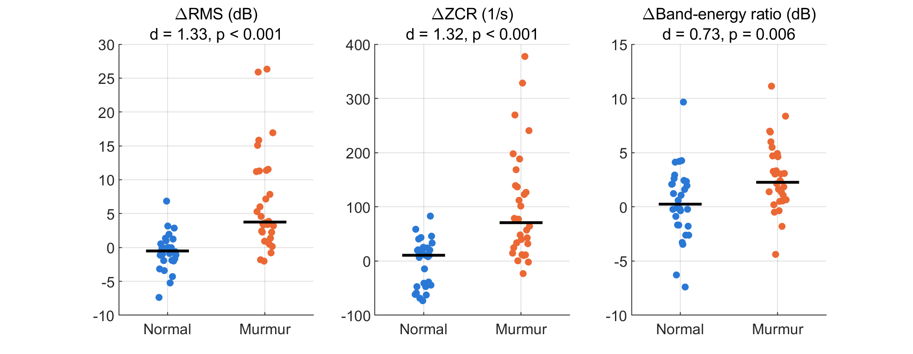
p3_featuresChoosing STFT settings with two numbers, not by eye
A spectrogram trades time detail against frequency detail. We scored every window type, length and overlap with two measures: S1 timing error (how precisely S1 shows up in time) and murmur separation d (how well systolic energy separates murmur from normal). Change the settings and watch the spectrogram respond.
Why we picked this: We picked Blackman, 256 samples, 75% overlap because it gave the best murmur separation (d = 0.99) with a low S1 timing error (9.0 ms). Rectangular windows leak, and 512 samples smear S1 and S2.
What we measured
| Setting compared | Result | Meaning |
|---|---|---|
| Window type at 256 samples | Rectangular 14.6 ms error vs ≈ 9 ms for tapered windows | Rectangular leaks energy and smears S1 in time |
| Blackman length 64 → 512 | Timing error 5.5 → 12.4 ms; d drops to 0.84 at 512 | Long windows blur the short heart sounds |
| Overlap 50% → 75% | d 0.91 → 0.99; error 12.5 → 9.0 ms | Clear gain for both measures |
| Overlap 75% → 90% | Error 7.4 ms but 2.5× more frames, no gain in d | Not worth the cost |
Blackman, 256 samples (64 ms, 15.6 Hz resolution), 75% overlap: timing error 9.0 ms, murmur separation d = 0.99.
See our MATLAB figures
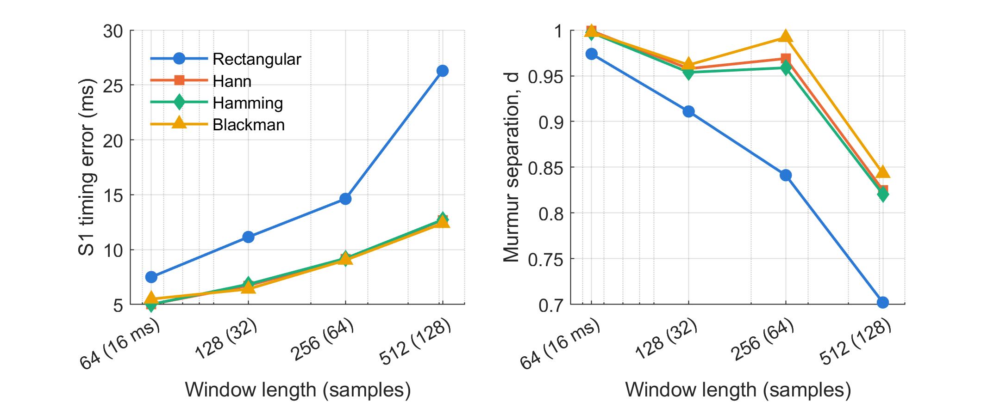
p3_stft_settings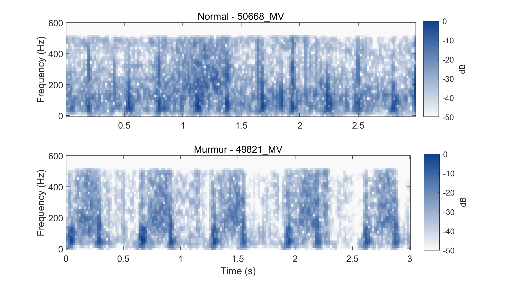
p3_stft_settingsFrom one heartbeat to one decision
Our detector has two layers. First, each cardiac cycle gets a murmur score. Then the whole recording is judged by a vote over its cycles. Follow the four steps, then move the threshold.
For every complete cycle, compute ΔRMS, ΔZCR and ΔBER (systole minus diastole).
Turn each feature into a z-score against the 550 normal development cycles.
Cycle score = mean of the chosen z-scores. Flag the cycle if score > T.
Recording = murmur if at least a fraction frac of its cycles are flagged.
Cycle scores on the development set 550 normal vs 811 murmur cycles
Why we picked this: We vote over many cycles because single-cycle scores overlap (d = 0.98): one heartbeat is unreliable, but most heartbeats agreeing is not. z-scores against normal cycles put every feature on the same scale.
See our MATLAB figure
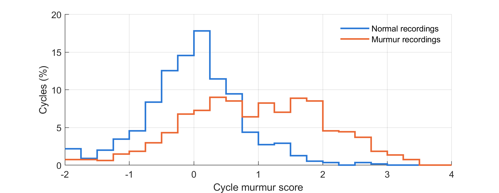
p4_detectorChoosing features, T and frac, then trying them yourself
We tested 3 preprocessing options (raw, FIR, IIR) × 7 feature combinations × 9 thresholds × 3 voting fractions. Features were chosen by cycle-level AUC, because recording accuracy jumps in 3.3% steps on 60 recordings. T and frac were then chosen by best balanced accuracy.
Computed live from our cycle features (development set).
- ΔZCR needs filtering: AUC 0.51 on raw signals (useless), 0.70 with FIR, 0.72 with IIR.
- Two features beat three: ΔRMS + ΔZCR reaches 0.780 (FIR) / 0.793 (IIR); all three 0.764 (FIR).
- IIR only marginally better, so we kept the FIR chosen in Phase 2.
- Best of these: ΔRMS + ΔZCR. The next step shows what whole-systole features miss, and step 15 the three features that make up our final detector.
Why we picked this: We chose features by cycle AUC because it uses 1,361 cycles instead of 60 recordings (where one recording is 3.3%) and does not depend on a threshold. T and frac were then chosen by balanced accuracy, which weighs catching murmurs and passing normals equally.
Detector lab runs our exact detector on our real cycle features
See our MATLAB figure
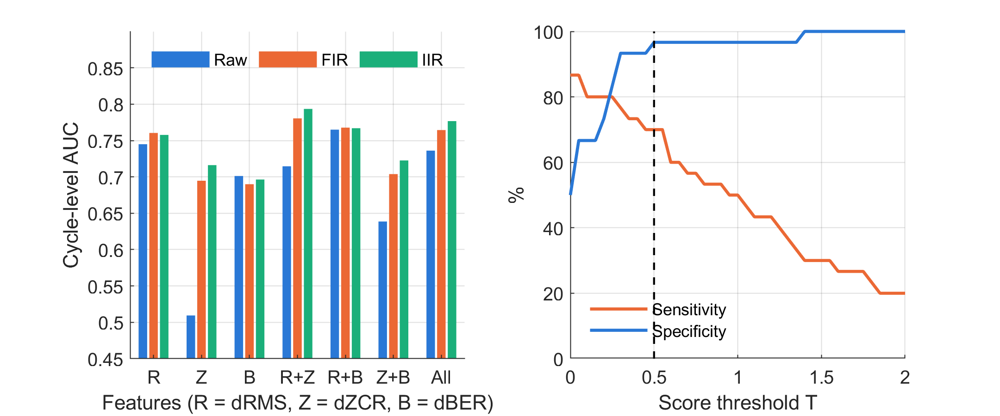
p4_parameter_studyWhere in the beat does the murmur sit?
We split systole into thirds (early, mid, late) and measured each third's loudness relative to diastole.
Systole thirds, RMS minus diastole RMS (dB) 160 main recordings
See our MATLAB figures
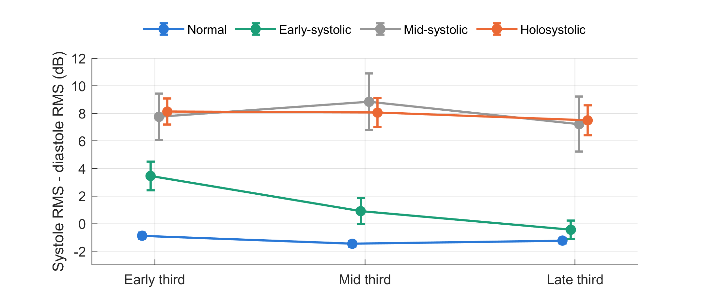
p4_regionsThree features that also catch short murmurs
The region analysis showed that early-systolic murmurs raise only the first third of systole. So we measured six new features per cycle and chose among them with the same method as before: cycle-level AUC on the development set, then T and frac by development balanced accuracy. Nothing was tuned on the test set.
Loudness of the first third of systole against diastole, so an early murmur is not averaged away.
Whichever third of systole is loudest, so a murmur is caught wherever it sits in systole.
Envelope variation of systole minus diastole. A murmur fills systole with steady sound; clicks and noise make it spiky. Lower means more murmur-like, so its sign is flipped.
Cycle-level AUC development cycles, computed live
Also tested and not chosen: Δ spectral centroid, Δ entropy and Δ spectral flux.
Why we picked this: We added early-third and loudest-third ΔRMS because early-systolic murmurs only raise the first third of systole and get diluted in a whole-systole average. Steady envelope separates a continuous murmur from clicks and noise. Together they reach cycle AUC 0.840.
Final detector: early-third ΔRMS, loudest-third ΔRMS and steady envelope, cycle flagged if its score is above T = 0.00, recording is a murmur if at least 65% of its cycles are flagged. Frozen here, then run once on the test set (next step). It runs in demoGUI and in Test your own.
Opening the sealed test set, once
With every parameter frozen, we ran the detector on 100 recordings from 100 new patients (50 murmur, 50 normal) that had never been used for any decision. If the test numbers are close to the development numbers, the design did not overfit.
Balanced accuracy 0.883 on development and 0.880 on test. No sign of overfitting.
Which murmurs did we miss? test set, detected / total
By auscultation location 213 recordings of the development patients
Recordings per location (murmur audible / normal): AV 19 / 26, PV 18 / 28, TV 21 / 27, MV 27 / 30. Where the murmur is not audible, the detector raised an alarm in 4 of 17 recordings. Overall: sensitivity 0.882 (85), specificity 0.811 (111).
See our MATLAB figure
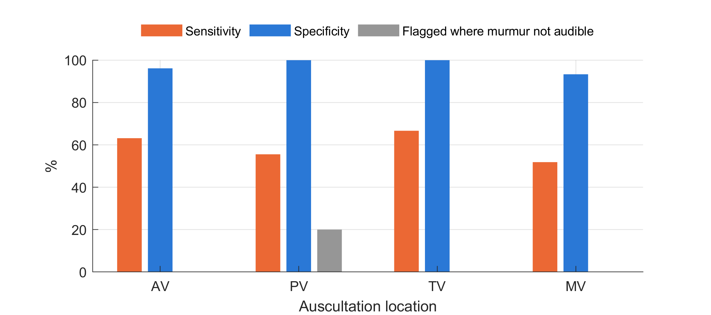
p4_evaluateAll the numbers in one place
Both detectors scored against the expert annotations, on development and test. Switch between the detectors, or read the full table underneath.
| Detector | Set | Sens. | Spec. | Prec. | F1 | FPR | FNR | Bal. acc. |
|---|
S1/S2 timing error: 19.6 ± 11.7 ms (development), 18.7 ± 11.7 ms (test). Cycle confusion counts (T = 0.00): development TP 725, FN 86, TN 270, FP 280; test TP 1072, FN 105, TN 598, FP 521. Single cycles flag many normal beats; the 65% vote is what removes these false alarms.
Do features behave the same at every location? effect size d, murmur-audible vs normal
S1/S2 F1 per location: AV 0.592, PV 0.749, TV 0.764, MV 0.684. AV is the hardest place to segment.
Observed, measured, concluded as the brief asked
See our MATLAB figure
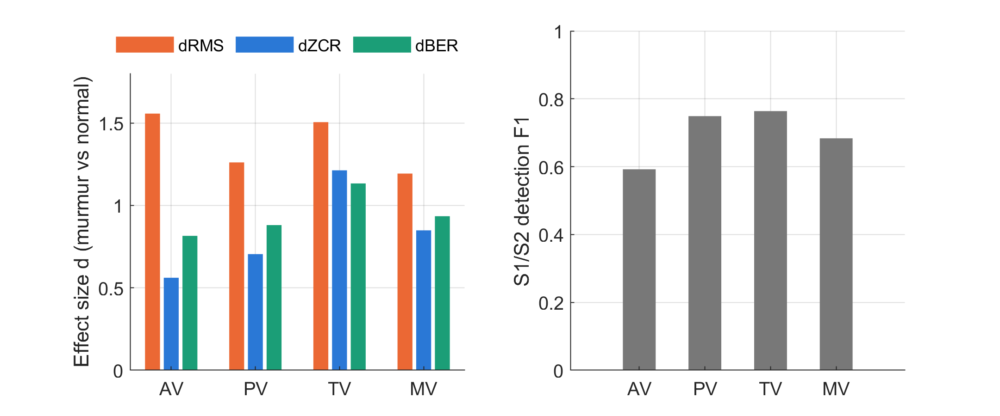
p5_locationsdemoGUI: the whole pipeline on one screen
A MATLAB app (uifigure, R2020b+) that lets anyone pick a recording and see every stage of our pipeline next to the reference annotations. Click the parts of the layout below to see what each one shows.
Why we picked this: We built demoGUI on the same code and saved reference as our scripts, so every number on screen matches this site. Three large tabs replaced a first version that was too cluttered.
Brief requirements covered
| The brief asks the GUI to… | Where in demoGUI |
|---|
Run it with demoGUI: the same app running our final detector (step 15). It builds its normal reference on the first run and saves it as demo_ref.mat.
What we achieved, what we could not, and who did what
- A pure-DSP pipeline with every parameter chosen by a measurement.
- It generalises: balanced accuracy 0.880 on test, 0.883 on development, 0.889 cross-validated.
- Voting over cycles turns a moderate cycle detector (bal. acc. 0.72) into a reliable recording detector (0.88).
- It catches 9 in 10 murmurs (45/50), including 11 of 14 short early-systolic ones.
- About 1 in 7 normal recordings is flagged (7/50), and 5 faint grade I murmurs are missed.
- The murmur detector uses the annotated cycle boundaries (our S1/S2 detector reaches F1 0.72–0.75).
- Small development set: one recording = 3.3%. The test set reduces but does not remove this.
- The location analysis includes the development recordings, and some groups are small.
- Only systolic murmurs were studied; regions are per cycle, not exact start/end times.
Automatic segmentation good enough to replace the annotations, so the detector can run on any recording without them.
Who did what
| Phase | Sotohy | Mahmoud |
|---|---|---|
| 1 Background & design | DSP pipeline design and block diagram; annotation and dataset analysis | Background study: PCG characteristics, murmurs, noise sources, literature review |
| 2 Preprocessing | FIR vs IIR design and selection; S1/S2 detector and its evaluation | Raw signal and noise inspection (PSD); cutoff and order sweep |
| 3 Features | Time and frequency features, statistics and feature selection | STFT window type, length and overlap study |
| 4 Murmur detection | Detector design and parameter study | Test-set evaluation, auscultation locations and cardiac-cycle regions |
| 5 Evaluation | Overall evaluation with all performance measures | Signal characteristics across auscultation locations |
| 6 GUI & report | Shared by both members | |
Code map MATLAB run order
| Script | Produces | Step on this site |
|---|
Recording selection was done in Python: select_patients.py (seed 42) and select_extra.py (seed 2026). Helper functions: loadPCG, segMask, firBandpass, iirBandpass, pcgFilter, filterScores, detectS1S2, scoreS1S2, effectSize, stftPower, stftScores, cycleFeatures, murmurScore, detectMurmur, cycleAUC.
References
- CirCor DigiScope Phonocardiogram Dataset v1.0.3, PhysioNet.
- J. Oliveira et al., "The CirCor DigiScope Dataset: From Murmur Detection to Murmur Classification," IEEE JBHI, 2022.
- D. B. Springer, L. Tarassenko, G. D. Clifford, "Logistic Regression-HSMM-Based Heart Sound Segmentation," IEEE TBME, 2016.
- A. Patwa et al., arXiv:2303.11423, 2023.
About this site: the labs run in your browser on our recordings and on per-cycle features exported from our pipeline. A Python re-run of the pipeline reproduces the MATLAB results exactly (550 / 811 cycles; development 21/30 murmurs and 29/30 normals; test TP 34, FN 16, TN 46, FP 4; S1/S2 F1 72.4%).